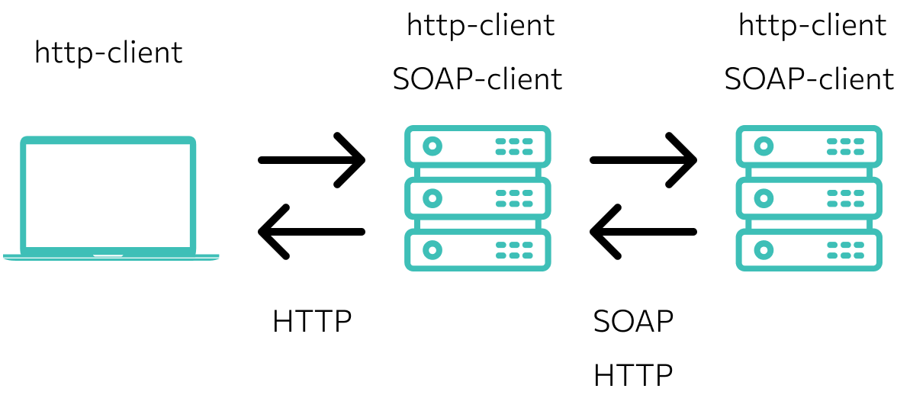

SOAP API
SOAP — это протокол, по которому веб-сервисы взаимодействуют друг с другом или с клиентами. Название
происходит от сокращения Simple Object Access Protocol («простой протокол доступа к объектам»). SOAP
API — это веб-сервис, использующий протокол SOAP для обмена сообщениями между серверами и клиентами.
При этом сообщения должны быть написаны на языке XML в соответствии со строгими стандартами, иначе
сервер вернет ошибку.

Особенности SOAP API
SOAP может использоваться с протоколами SMTP, FTP, HTTP, HTTPS. Чаще всего — с HTTP как с наиболее
универсальным: его поддерживают все браузеры и серверы. Корректное SOAP-сообщение состоит из
нескольких структурных элементов:
Envelope,
Header,
Body и
Fault.
Envelope («конверт»).
Это корневой элемент. Определяет XML-документ как сообщение SOAP с помощью пространства имен
xmlns_soap=»http://www.w3.org/2003/05/soap-envelope/». Если в определении будет указан другой адрес,
сервер вернет ошибку.
Включает в себя атрибуты сообщения, связанные с конкретным приложением (аутентификация, проведение
платежей и так далее). В заголовке могут использоваться три атрибута, которые указывают, как
принимающая сторона должна обрабатывать сообщение, — mustUnderstand, actor и encodingStyle. Значение
mustUnderstand — 1 или 0 — говорит принимающему приложению о том, следует ли распознавать заголовок
в обязательном или опциональном порядке. Атрибут actor задает конкретную конечную точку для
сообщения. Атрибут encodingStyle устанавливает специфическую кодировку для элемента. По умолчанию
SOAP-сообщение не имеет определенной кодировки.
Body («тело»).
Сообщение, которое передает веб-приложение. Может содержать запрос к серверу или ответ от него.
Пример сообщения, которое запрашивает стоимость ноутбука в онлайн-магазине:
<?xml version="1.0"?> <soap:Envelope
xmlns_soap="http://www.w3.org/2003/05/soap-envelope/"
soap_encodingStyle="http://www.w3.org/2003/05/soap-encoding"> <soap:Body>
<m:GetPrice xmlns_m="https://online-shop.ru/prices"> <m:Item>Dell Vostro
3515-5371</m:Item> </m:GetPrice> </soap:Body> </soap:Envelope>
Пример ответа сервера онлайн-магазина:
><?xml version="1.0"?> <soap:Envelope
xmlns_soap="http://www.w3.org/2003/05/soap-envelope/"
soap_encodingStyle="http://www.w3.org/2003/05/soap-encoding"> <soap:Body>
<m:GetPriceResponse xmlns_m="https://online-shop.ru/prices">
<m:Price>37299</m:Price> </m:GetPriceResponse> </soap:Body>
</soap:Envelope>
Fault («ошибка»).
Опциональный элемент. Передает уведомление об ошибках, если они возникли в ходе обработки сообщения.
Может содержать вложенные элементы, которые проясняют причину возникновения ошибки:
- faultcode — код неполадки;
- faultstring — «человекопонятное» описание проблемы;
- faultactor — информация о программном компоненте, который вызвал ошибку;
- detail — дополнительные сведения о месте возникновения неполадки.
В каких случаях используют SOAP
Асинхронная обработка и последующий вызов. Стандарт SOAP 1.2 обеспечивает клиенту
гарантированный уровень надежности и безопасности.
Формальное средство коммуникации. Если клиент и сервер имеют соглашение о формате обмена, то
SOAP 1.2 предоставляет жесткие спецификации для такого типа взаимодействия. Пример — сайт
онлайн-покупок, на котором пользователи добавляют товары в корзину перед оплатой. Предположим,
что есть веб-служба, которая выполняет окончательный платеж. Может быть достигнуто соглашение,
что веб-сервис будет принимать только название товара, цену за единицу и количество. Если
сценарий существует, лучше использовать протокол SOAP.
Операции с состоянием. Если приложение требует, чтобы состояние сохранялось от одного запроса к
другому, то стандарт SOAP 1.2 предоставляет структуру для поддержки таких требований.